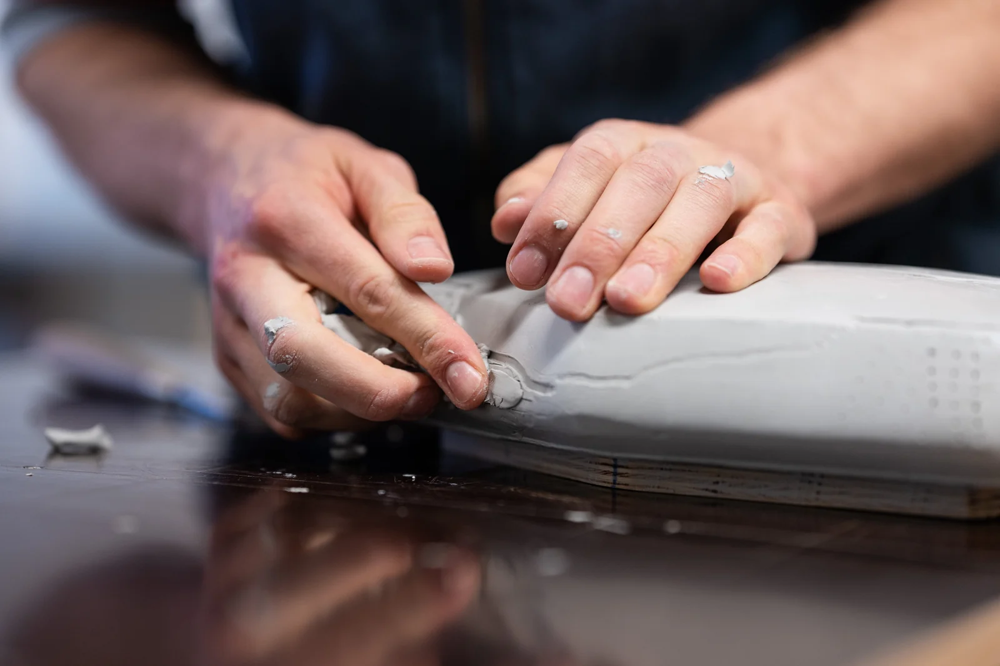
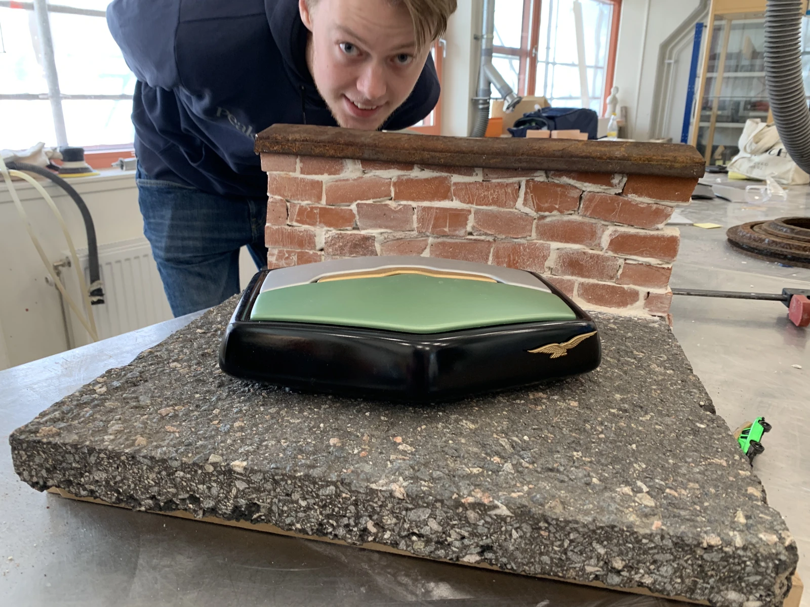
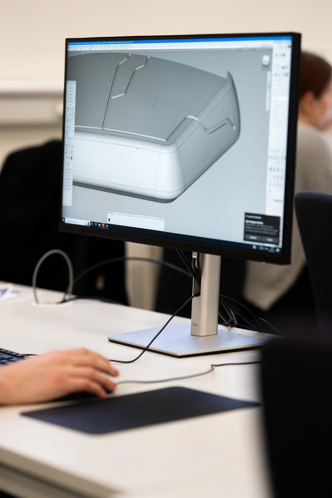
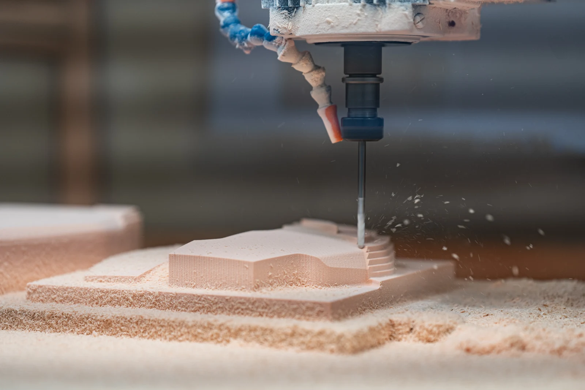
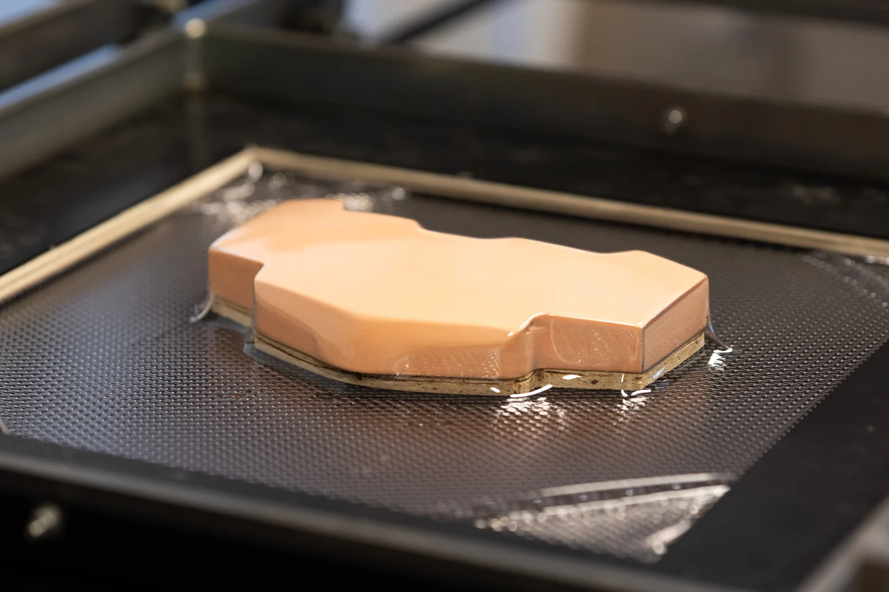
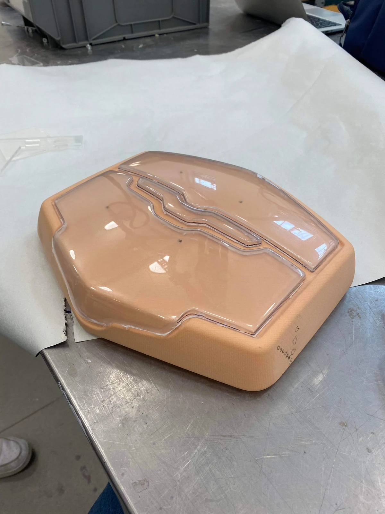
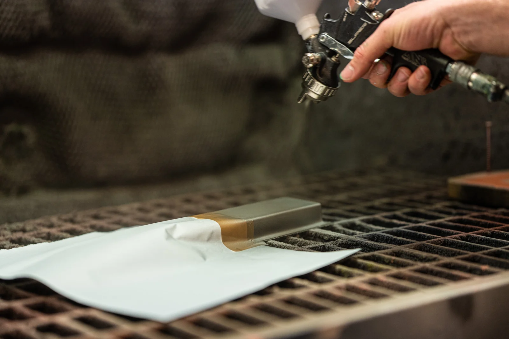
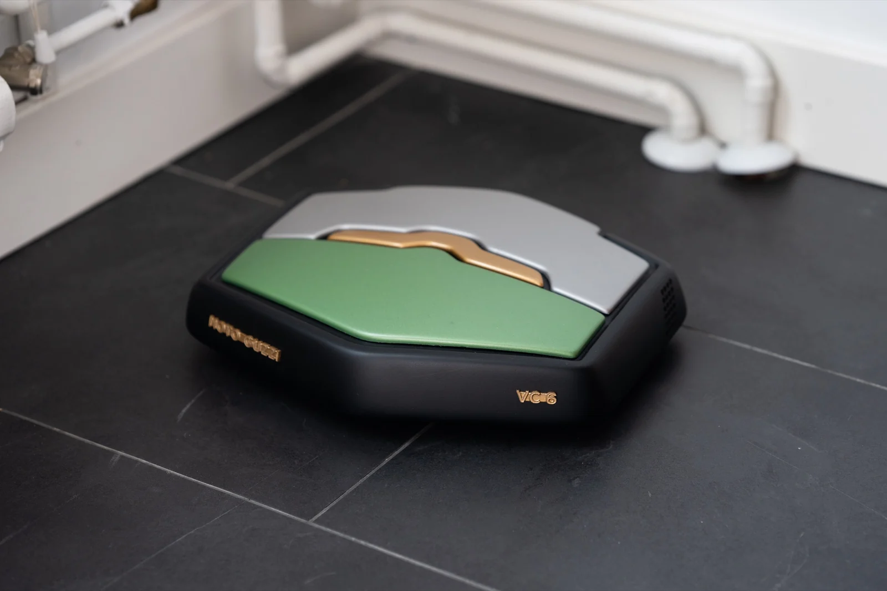
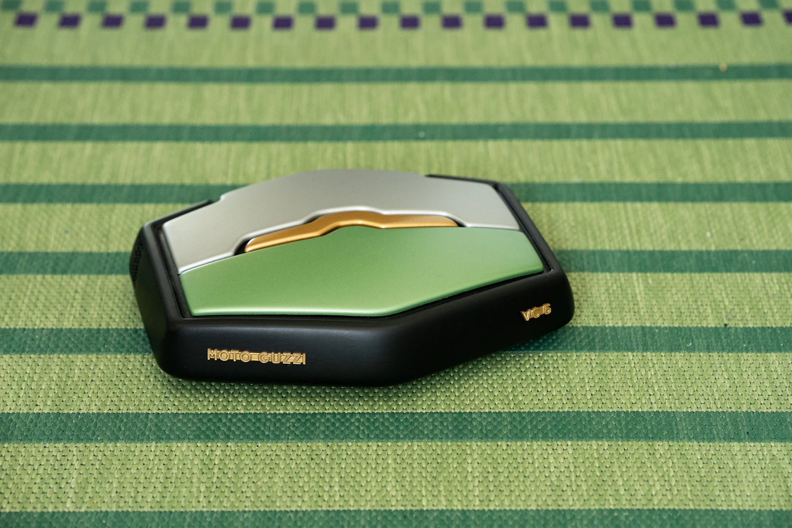
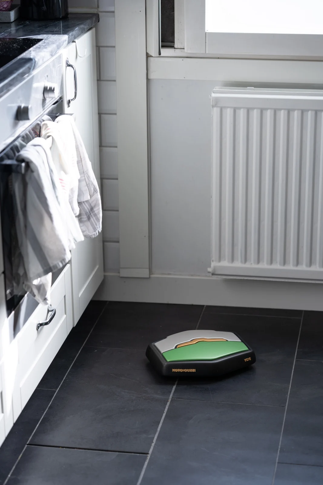

Moto Guzzi Robot Vacuum
Moto Guzzi’s motorcycle heritage translated into a domestic product. Working in a six-person team, I carried the selected form through 3D scanning, Alias development and physical prototyping.

- Role
- 3D scanning, CAD and prototyping
- Team
- 6 designers
- Duration
- 3 months · 2023
- Tools
- Alias and workshop manufacturing
The brief
Each team was assigned a motorcycle brand and tasked with designing a robot vacuum that could belong in its portfolio. Our team was assigned Moto Guzzi, and we studied how its forms, details and character could translate into an object for the home.
Brand research and concept exploration helped us choose which cues were worth carrying forward. Clay modeling gave the team a physical way to compare proportions before developing the selected direction.
My contribution
My responsibility covered 3D scanning, surface modeling in Autodesk Alias and the final physical prototype. I scanned the selected clay form and rebuilt it digitally so the team could refine and communicate a shared direction.
The digital model connected visualization and manufacturing. Working between the clay form, the scan and the Alias surfaces helped us keep the product’s proportions consistent as the design developed.



Making the prototype
I translated the Alias model into CNC-milled foam, vacuum-formed covers, 3D-printed details and laser-cut graphics. These methods let us turn the digital surfaces into a full-scale appearance model.
I checked the fit of the formed covers on the body before painting and finishing the parts. Bringing the parts together made the design tangible and gave us a way to judge the whole object beyond the screen.




The result
The final VC 6 appearance model brings Moto Guzzi cues into a compact domestic object through layered panels, curved surfaces, ventilation details and contrasting finishes.



What I learned
This project strengthened my ability to move between a physical form, a digital surface model and manufactured parts. I developed a better understanding of how production methods and small adjustments affect the final prototype. It also showed me how a shared digital model helps a team make decisions around the same design.
- Skills I developed
-
- Turning a scanned physical form into usable CAD surfaces.
- Connecting digital modeling with manufacturing and finishing.
- Developing a shared design direction within a team.
- Tools & methods
-
- Autodesk Alias and 3D scanning.
- Clay modeling, CNC milling and vacuum forming.
- 3D printing and laser cutting.